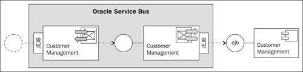
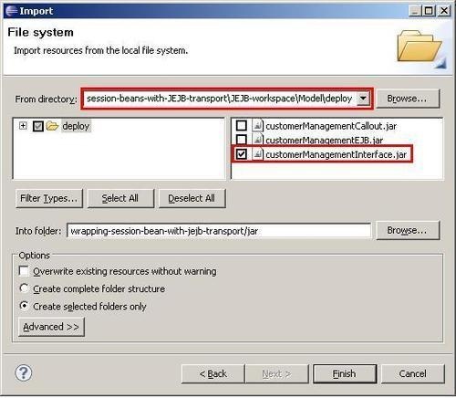
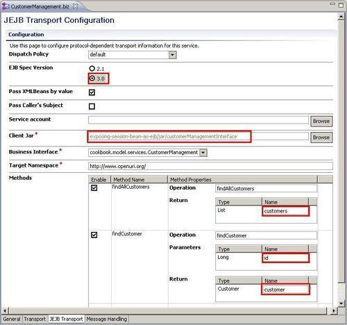
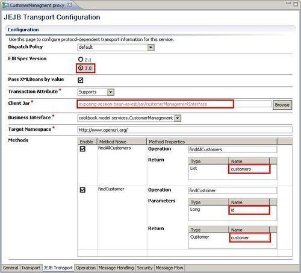
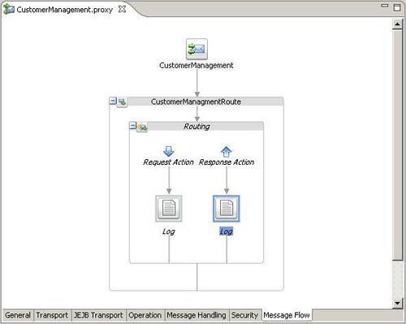
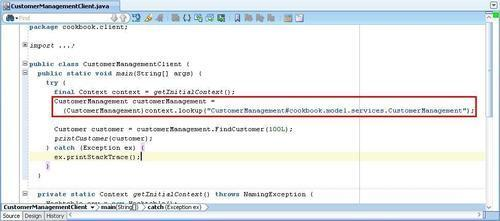
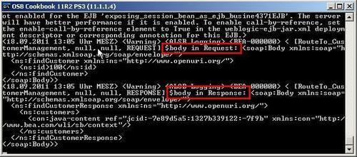

The JEJB transport allows passing POJOs through the OSB. We can use the JEJB transport on proxy service and expose the proxy service as a remote EJB. For the consumer/client, the proxy service looks like a normal stateless session bean. This will add an additional layer between the client and some existing EJB session beans, which provides additional functionality and agility, such as:
In this recipe, we will implement the same EJB session bean interface on the OSB and just pass-through the messages:

Make sure that the EJB session bean is deployed to the OSB server as shown in the Introduction section of this chapter.
First we have to create a new OSB project and then register the customer management service interface JAR. To make the JAR available, we will use the Import functionality of Eclipse OEPE. This is an alternative way to the copy-paste approach we have used in the previous recipe. In Eclipse OEPE, perform the following steps:
exposing-session-bean-as-ejb and create a jar, business, and proxy folder in this new project. jar folder and from the File menu select Import. General folder, select File System, and click on Next. deploy folder in the Model project folder.
Next, we will create a new business service that will call the customer management EJB session bean:
business folder, create a new business service and name it CustomerManagement. jejb::CustomerManagementService#cookbook.model.services.CustomerManagement into the Endpoint URI field and click on Add. customers. id. customer:
Create a proxy service with a JEJB transport, which calls this business service. In Eclipse OEPE, perform the following steps:
CustomerManagement into the File name field. customers. id. customer:
$body variable. Right-click on the Request action and select Insert Into | Reporting | Log to add a Log action. $body as the expression, and click on the OK button. $body in Request into the Annotation field and select Warning for the Severity drop-down listbox. $body variable. Copy the Log action from the Request Action and paste it into the Response Action. $body in Response into the Annotation field:
Now it's time to test the OSB service. In JDeveloper, again open the osbbook_jejb.ws workspace and perform the following steps to change the already used Java test class to no longer invoke the EJB session bean, but invoke the proxy service with the JEJB transport:
context.lookup code:CustomerManagement customerManagement = (CustomerManagement)context.lookup("CustomerManagement#cookbook.model.services.CustomerManagement");

CustomerManagementClient.java file and select Run.
The value of the request, which on the transport level is a Java bean, is translated into an XML representation with all the properties (id in our case) as elements. We have triggered this behavior by enabling the Pass XMLBeans by value on the JEJB transport configuration of the proxy service. This is of course helpful if we need to trigger some action based on the value of the request message or we need to simply log the request message.
This is not the case with the response. In the response, we only get a reference to the Java object. If we need access to the values, then we have to use a Java Callout action that we will cover in the next recipe, Manipulating the response of the JEJB transport by a Java Callout action.
The JEJB transport lets us pass POJOs through the OSB. We created a proxy service which implements the same EJB interface as the business service wrapping the EJB session bean on the EJB server. To switch to the EJB implementation on the OSB in the consuming Java class, we only had to change the JNDI alias of the context lookup to point to the EJB interface implemented by the proxy service.
To the Java EE client, the JEJB proxy service looks like an EJB stateless session bean.
The JEBJ transport is always synchronous and the message exchange pattern is always request-response.